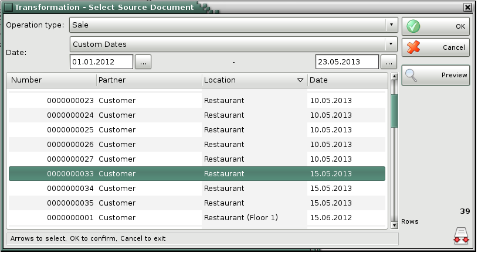
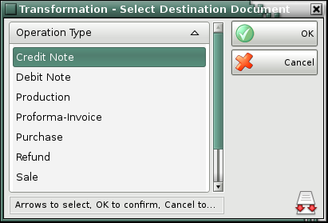

Transform Document
Use the Document Transformation window (keyboard shortcut Ctrl+T) for quick and easy document type transformation. For example, you can transform a Proforma Invoice document into a Sale document or an Purchase document into a Credit Note document. This allows you to use the system more efficiently. Enter document data only once and the other documents are created very quickly.

From the drop-down list Operation type select the document type you will be transforming, then choose a source document and press OK button.

From Transformation - Select Destination Document choose operation type and press OK button. All information from the source document will be transfer into the new operation.
Finally save the operation using the standard methods.
�2008-2011 Microinvest, All rights reserved